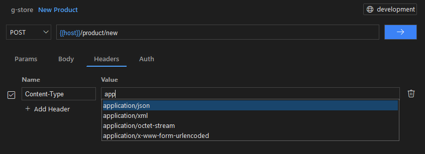
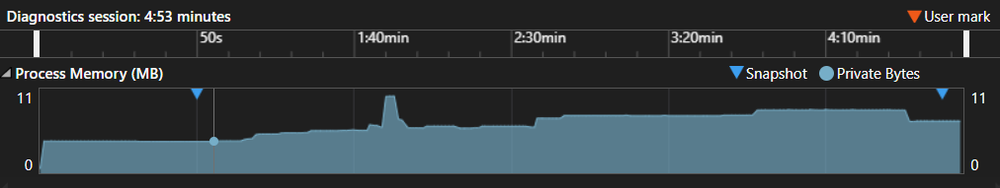

A native HTTP client for Windows developers
Test and debug APIs without the overhead. ReqKit is built directly with Windows APIs. No third-party libraries. Instant startup, low memory, runs on any Windows 10 or 11 machine.
Download on Microsoft StoreBuilt with Win32, but designed with modern UX principles in mind. ReqKit delivers responsive layouts, intelligent autocomplete, and polished interactions typically associated with higher-level frameworks.

{{variable}} substitution in URLs, headers and bodyDifferent API clients are built using different technologies, which can impact resource usage. Native applications typically use less memory than browser-based tools.
Memory usage varies depending on workload, open requests, and background processes. Values shown represent typical ranges observed in common usage scenarios.
ReqKit is built as a native Win32 application, designed to be lightweight and responsive. Its performance is evaluated through real end-to-end scenarios and memory profiling, reflecting typical day-to-day API workflows.

In practice, this translates to fast startup and a consistently low memory footprint. During a 5-minute automated test session, memory usage remains below 10 MB, even when handling larger payloads, authentication flows, and UI interactions.